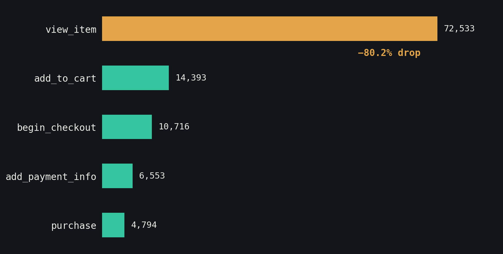

Checkout usually gets blamed for lost sales. On this dataset, the real leak is one step earlier — between viewing a product and adding it to the cart. Here's the process from raw event data to a tracking plan built to diagnose it.
Dataset & method
Built entirely on the public Google Merchandise Store GA4 sample dataset (BigQuery), covering Nov 2020 – Jan 2021. Queried in BigQuery, analyzed in Python, and translated into an Adobe Analytics / Customer Journey Analytics tracking plan. No client or employer data used.
The funnel
Once a user adds a product to their cart, the funnel holds up reasonably well: 74.5% continue to checkout, and 73.2% of those who add payment info complete the purchase. The bottleneck sits earlier, on the product page itself.

| Cut | Finding |
|---|---|
| By channel | Referral traffic (shop.googlemerchandisestore.com) converts best at 9.2%; CPC converts worst at 4.8% — worth questioning whether paid spend is earning its keep. |
| By device | Desktop 7.0%, mobile 7.5%, tablet 6.7% — the common "mobile converts worse" assumption doesn't hold up on this data. |
Business objective
Identify where in the product page experience purchase intent is lost, and whether that varies by traffic source, device, or product/category.
Tracking plan
The full spec — including eVars, props, implementation rules, QA plan, and team coordination — is in the downloadable document. The additions below are the part that matters most for a lead role: instrumentation that GA4 doesn't capture by default, proposed specifically to diagnose this drop-off rather than just confirm it.
Dashboard
A Power BI dashboard built on this same dataset — funnel, channel, and device views in one place — is next. It'll be embedded here once it's published.